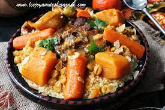

couscous

Description
Algerian Couscous is a spicy dish emblematic of Maghreb cuisine, prepared with lamb meat, and poultry, garnished
with medium semolina and Mediterranean vegetables . It is also one of the favorite dishes of the French.
ingredients
- couscous
- 3 cups water
- 2 cups couscous
- 1 tablespoon butter
- 3 tablespoons harissa
- ¼ cup olive oil, or more as needed, divided
- 8 mutton chops, fat removed
- 4 chicken drumsticks
- 3 onions, quartered
- water to cover
- 2 tablespoons ground turmeric
- 2 tablespoons ground cumin
- 2 tablespoons ground coriander
- 3 potatoes, cut into chunks
- 3 turnips, cut into chunks
- 3 carrots, sliced lengthwise and cut into chunks
- 1 (6 ounce) can tomato paste
- 2 tablespoons ras el hanout
- 1 (7 ounce) can chickpeas, drained
- 2 zucchini, sliced lengthwise and cut into chunks